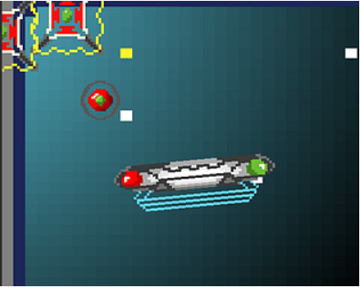

Hey!! My name is João Gabriel
But you can call me John!
I'm a agriculture engineer who currently works at a sugar and energy factory! But my passion for coding has gotten the better of me!! I'm working to become a full time developer in the future with the help of Le Wagon bootcamp!
Excel
I'm am currently a data Analyst working at Raízen, I am responsible for planning and maintaining the machinery we use here to harvest sugar cane! It's a really interesting job in which I have to use Microsoft Excel a lot, and because of that I got my experience using VBA (Visual Basic for Applications)! Saddly I don't like working here that much, and I'm pursuing other opportunities in the world of CODE!
Game development
I'm also very passionate about game development and developed a game during a Game Jam! I used the Unity game engine coding in C#! It's a great tool to develop games and was one of my first contact with code!
Wanna check out my little game called EARTH HURL FORCE? A game where you save earth hurling a bomb through SPACE!
Here click this button!
Play Earth Hurl Force 